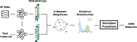
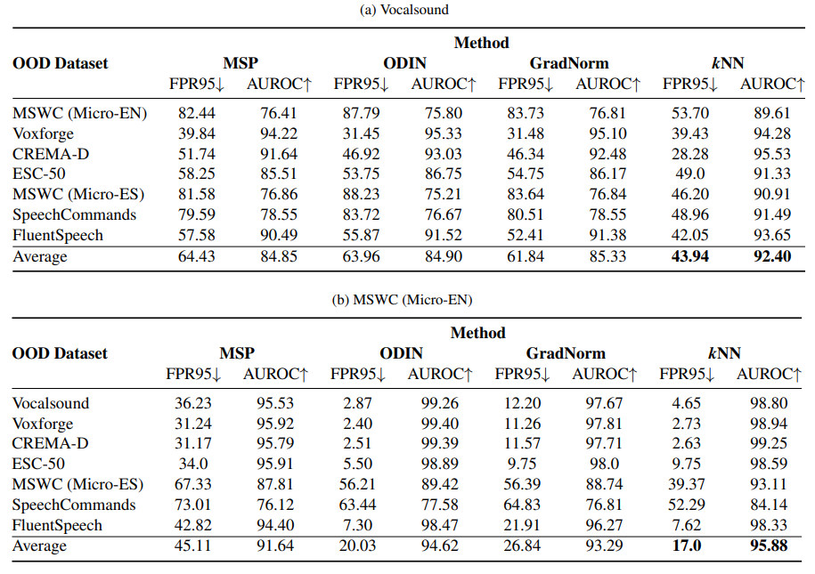
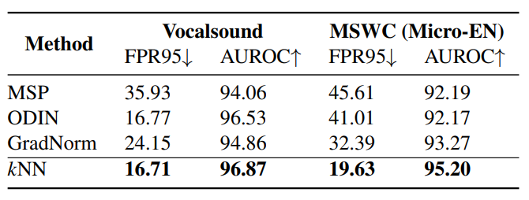

Out-of-distribution (OOD) detection is concerned with identifying data points that do not belong to the same distribution as the model's training data. For the safe deployment of predictive models in a real-world environment, it is critical to avoid making confident predictions on OOD inputs as it can lead to potentially dangerous consequences. However, OOD detection largely remains an under-explored area in the audio (and speech) domain. This is despite the fact that audio is a central modality for many tasks, such as speaker diarization, automatic speech recognition, and sound event detection. To address this, we propose to leverage feature-space of the model with deep k-nearest neighbors to detect OOD samples. We show that this simple and flexible method effectively detects OOD inputs across a broad category of audio (and speech) datasets. Specifically, it improves the false positive rate (FPR@TPR95) by 17% and the AUROC score by 7% than other prior techniques.
We leverage nearest neighbor distance centered on a non-parametric approach without making strong distributional assumptions regarding underlying embedding space. To identify OOD samples, we extract embedding for a test input, compute its distance to k-nearest neighbors in the training set and use a threshold to flag the input.
|

Overview of the deep k-nearest neighbors approach for leveraging embedding space to detect out-of-distribution samples. |
We demonstrate the effectiveness of our approach on a broad range of audio recognition tasks and different neural network architectures and provide an extensive comparison with both recent and classical approaches as baselines.
Table 1. OOD detection results in comparison with other strong approaches on different audio datasets. All results are based on a MobileNet (YAMNet) model trained only on ID data (i.e., MSWC (Micro-EN) and Vocalsound). ↑ and ↓ indicate larger and smaller values are better, respectively. All values are percentages.
Figure 1. Distribution of the kNN distance with the normalized features from MobileNet. The ID data is MSWC (Micro-EN).
Table 2. OOD detection results on EfficientNet-B0 architecture.
Bukhsh, Zaharah, and Aaqib Saeed. "On Out-of-Distribution Detection for Audio with Deep Nearest Neighbors." ICASSP 2023-2023 IEEE International Conference on Acoustics, Speech and Signal Processing (ICASSP). IEEE, 2023.
@inproceedings{bukhsh2023out,
title={On Out-of-Distribution Detection for Audio with Deep Nearest Neighbors},
author={Bukhsh, Zaharah and Saeed, Aaqib},
booktitle={ICASSP 2023-2023 IEEE International Conference on Acoustics, Speech and Signal Processing (ICASSP)},
year={2023},
organization={IEEE}
}